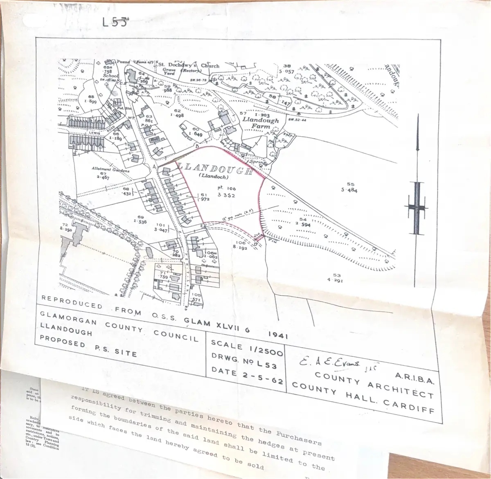

GHF-E106-R107-A1 partial
1965 Contract.pdf

Transcript
- tg te est iseeg, bap 87 t.203 Llandough - —_— — — — <= - IN rs A * - se eeeer et * = TF ee ww aweae o* * J See Cec (1)-(4). I permitted arily or condition should b covenants and to restrictions, notices, etc., under Town and Country Planning law: see Condition 16 (3). ric Deere PART Where an under. lease is involved. the The interest Sold is fact should be made freehold clear, if this clause is 1% loft as it stands, B. Condition 13 of the Nationa Condition 13 will nal Conditions of Sale Shall [ppt] have effect. not apply at all. Tf. by deleting “not,” Condition 13 is incor- porated, the ween, C. A deposit of 10 per cent. of the purchase money shall be paid to “It shall also apply Street Mayfai " to the following — 7? Wigram & Co. of 9 mony be added, dXxpanrone the additional ei = ters specified ; see 13 (8) (v). D. The completion date shall be the (em day of Pernrt, Beneficial owner, trustees for sale, or E. The Vendor is/ae the Beneficial Ownar as may be. queen as [stakeholder } TOD IGCKAOHOEC XENON CRUE OOCAMD CK TOTCeoE F. Title shall be deduced, and shall commence, as follows :— With a Conveyance on sale qd ated 25th December 1948
Read more
State whether the
ealo’ in with ‘vacant G. Bhosxheis The property is sold (a) Subject to the exceptions and
possession, or subject reservations restrictive covenant
e i and stipulations contained in
varticnam fine & Conveyance dated Sth March 1962 made between
particulars of them), of the one part
ther part(as modified by a Deed
dated the 3nc day of
he same partie
Supplied to the Purchaser who Shall be deemed to
purchase with full knowledz . '
ge thereof and shall rais
respect thereof
€ no requisitions in
(b) to an easement in favour of the Wales
See Condition 15 A i
Gas Board dated(continued on ride.
ooting that the permitted use thereof for the p
(1)-(4). If the use is
The property is sold on t
permitted tempor- Planning Acts is [the use (if any) spqgified in the particulars of sale] [use as
arily or subject to
conditions, the facts
should be stated.
J. The sale includes the chattels, fittings and other separate items specified in the inventory annexed, which
are to be taken by the Purchaser (de the price of £
State by whom,
and at whose ex-
pense, the valuation
is to be made.
] [at a valuation to be made by
Refer, using riders
orechedules as apes
sary, to restrictive
covenants and to
restriotions, notices,
ete., under Town and
Coun Planning
law rss Condition
16 (3).
Construction.
The Auction,
Chattels, etc., and
separate items.
Comptetion.
Rents, outgoings and
apportionments.
interest,
2 rene SR pending
completion.
Delivery of Abstract.
Delivery of
requisitions and
observations on
replies.
Vendor's right to
rescind.
Purchaser's right to
rescind.
Exieting leaseholds.
inspection of lease.
identity of
reversioner.
Reversioner’s
licence.
Apportionment of
rent.
Vendor's covenant.
Reference to earlier
title,
Documents not in
the possession of the
v r.
identity.
Boundaries.
Condition of
property.
earlier in date than the document with which the title commences,and such plan or earlier document is in
trustees or mortgagee, the vendor shall supply a copy thereof with the abstract.
ee
PN eS
The National Conditions of Sale
Seventeenth Edition, Issued May, 1959
THESE CONDITIONS ARE COPYRIGHT AND MAY NOT BE REPRODUCED
ts, ‘ the vendor ” and “ the purchaser ”’ include the persons deriving title under them respectively,
d for chattels, fittings and other separate items, references to the “ Special Conditions ” include
any contract made by reference to these conditions, and on a sale by private treaty references
On a sale in lots, the conditions apply to each lot.
1. In these conditions, where the context admit
“the purchase money ” includes any sum to be pal
references to the particulars of sale and to the provisions of any ‘
to the “ auctioneer ” shall be read as references to the yendor’s agent.
2. (1) Unless otherwise provided in the Special Conditions, the sale of the property and of each lot is subject to a reserved price and to a right
his behalf to bid up to that price. ip ;
for is Lraeaiah any ey divide ¢ he setnierty into lots, reaiManine, consolidate and sub-divide lots and withdraw the property or any lot (not actual! y
; i erved price, ; :
geal NOT am rs sy bid advance less than the amount fixed for that purpose by the auctioneer, no bid shall be retracted, but the auctioneer
may refuse rsa bid; and, if any dispute arises respecting a bid, the auctioneer may determine the dispute, or the property may, at the vendor’s option,
: in at the last undisputed bid or be withdrawn. : P , ;
era) Bahject re the provisions of this condition, the highest bidder shall be the purchaser, and shall forthwith pay the deposit mentioned in the
Special Conditions and complete and sign the memorandum endorsed hereon.
3. If the sale includes chattels, fittings or other separate items, the vendor warrants that the same are not, nor is any of them, subject to any
hire, hire-purchase or credit sale agreement.
4. (1) The completion date shall be the day mentioned for that purpose in the Special Conditions or, if none, the first working day after the
expiration of five weeks from the delivery of the abstract of title. ; as ‘
A (2) Completion shall take place at the office of the vendor’s solicitor or, if the vendor requires, at the office of the solicitor of his mortgagee.
5. The purchase being completed (whether on the completion date or subsequently), the income and outgoings shall be apportioned as follows :—
(i) In acase to which proviso (i) to condition 6 (1) applies, or in which the purchaser is in possession of the whole of the property as lessee or
teaant at a rent, apportionment shall be made as at the date of actual completion (that day itself being apportioned to the vendor) :
(ii) In any other case apportionment shall be made as from the completion date (that day itself being apportioned to the vendor) :
(iii) Rates shall be apportioned in the period for which they are intended to provide, and rents in the period in respect
of which they are payable; and apportionment of yearly items (whether or not the same are payable by equal quarterly, monthly or
other instalments) shall be in the relevant number of days relatively to the number of days in the full year.
6. (1) If the purchase shall not be completed on the completion date then (subject to the provisions of paragraph (2) of this Condition) the
purchaser shall pay interest on the remainder of his purchase money at 5 per cent. per annum (less tax) from that date until the purchase shall actually
be completed: Provided nevertheless— : :
(i) That (without prejudice to the operation of proviso (ii) to this paragraph) the vendor may by notice in writing before actual completion
elect to take the income of the property (less outgoings) up to the date of actual completion instead of interest as aforesaid : _
(ii) That, if the delay arises from any cause other than the neglect or default of the purchaser, and if the purchaser (not being in occupation
of the property in circumstances to which condition 7 applies) places the remainder of his purchase money (at his own risk) at interest
on a deposit account with any bank within 20 miles of the office of the vendor’s solicitor, and gives written notice thereof to the vendor
or his solicitor, then in lieu of the interest or income payable to or receivable by the vendor as aforesaid, the vendor shall from the time
_,. of such notice be entitled to such interest only as shall be actually produced by such deposit :
(iii) That the vendor shall in no case be or become entitled in respect of the same period of time both to be paid interest and to enjoy income
of the property, or to be paid interest more than once on the same sum of money.
(2) The purchaser shall not be liable to pay interest under paragraph (1) of this condition—
(i) so long as delay in completion is attributable to any act or default of the vendor or his mortgagee or Settled Land Act trustees :
(ii) in case the property is to be constructed or converted’ by the vendor, so long as the construction or conversion is unfinished.
7. (1) If the purchaser (not being already in occupation as lessee or tenant at a rent) is let into occupation of the property before the actual!
completion of the purchase, then, as from the date of his going into occupation and until actual completion, or until upon discharge or rescission of the
contract he ceases to occupy the property, the purchaser shall—
(i) be the licensee and not the tenant of the vendor:
(ii) pay interest on the remainder of the purchase money at 5 per cent. per annum (less tax) :
(iii) keep the property in as good repair and condition as it was in when he went into occupation :
(iv) pay, or otherwise indemnify the vendor against, all outgoings and expenses (including the cost of insurance) in respect of the property, the
purchaser at the same time taking or being credited with the income of the property (if any).
(2) Upon discharge or rescission of the contract the purchaser shall forthwith give up the property in such repair and condition as aforesaid.
(3) A purchaser going into occupation before completion shall not be deemed thereby to have accepted the vendor’s title.
(4) Unless otherwise provided in the Special Conditions, this condition shall not apply where the property comprises two or more separate
dwellings and the purchaser is let into occupation of part only of the property.
8. (1) The vendor shall deliver the abstract of title within fourteen days next after the date of the contract.
(2) The purchaser shall deliver in writing his requisitions in respect of the title, and of the matters appearing on the abstract or the Special
Conditions, within fourteen days from the delivery of the abstract, and his observations upon the replies to the requisitions within seven days from
delivery of the replies.
(3) In respect of the delivery of requisitions and observations, time shall be of the essence of the contract, notwithstanding that the abstract may
not have been delivered within due time.
(4) Subject to such requisitions and observations, the purchaser shall be deemed to have accepted the title.
(5) An abstract, though in fact imperfect, shall be deemed perfect, except for the purposes of any requisitions or observations which could not be
raised or made on the information therein contained.
(6) If the purchaser shall persist in any objection to the title which the vendor shall be unable or unwilling, on reasonable grounds, to remove, and
shal} not withdraw the same within ten days of being required so to do, the vendor may, subject to the purchaser’s rights under sections 42 and 125
of the Law of Property Act, 1925, by notice in writing to the purchaser or his solicitor, and notwithstanding any intermediate negotiation or litigation,
rescind the contract.
(7) Upon such rescission the vendor shall return the deposit, but without interest, costs of investigating title or other compensation or payment,
and the purchaser shall return the abstract and other papers furnished to him.
9. (1) Where by the Special Conditions the purchase is expressed to be made on the footing that the purchase money will be provided with the
aid of an advance of a specified sum from a named person (hereinafter referred to as “ the proposed mortgagee ’’), the following provisions of this
condition shall apply.
(2) If on or before the completion date, or (in case of delay in completion) at any time thereafter unless or until the purchaser has deprived himself
of the equitable remedy of specific performance of the contract, the proposed mortgagee shall for any reason (save as hereinafter mentioned) decline to
make an advance to the purchaser of at least the specified sum, then the purchaser may by notice in writing to the vendor or his solicitor rescind the
contract, and thereupon paragraph (7) of condition 8 shall apply. .
(3) Paragraph (2) of this condition shall not apply where the proposed mortgagee declines as aforesaid solely by reason of an objection which the
vendor is able and willing to remove.
10. (1) Where the interest sold is leasehold for the residue of an existing term the following provisions of this condition shall apply.
(2) The lease or underlease or a copy thereof having been made available, the purchaser (whether he has inspected the same or not) shall be deemed
to have bought with full notice of the contents thereof.
(3) On production of a receipt for the last payment due for rent under the lease or underlease, the purchaser shall assume without proof that the
person giving the receipt, though not the original lessor, is the reversioner expectant on the said lease or underlease or his duly authorised agent,
(4) No objection shall be taken on account of the covenants in an underlease not corresponding with the covenants in any superior lease.
(5) The sale is subject to the reversioner’s licence being obtained, where necessary. ‘The fee for such licence shall be paid by the vendor, but, if
the licence cannot be obtained, the vendor may rescind the contract on the same terms as if the purchaser had persisted in an objection to the title
which the vendor was unable to remove. ie i
(6) Where the property comprises part only of the property comprised in a lease or underlease, the rent, covenants and conditions shall, if the
purchaser so requires, be legally apportioned at his expense, but completion shall not be delayed on that account and in the meantime the apportionment
by the auctioneer shall be accepted, or the property may at the option of the vendor be sub-demised for the residue of the term, less one day, at
a rent apportioned by the auctioneer and subject to the purchaser executing a counterpart containing covenants and provisions corresponding to those
contained in the lease or underlease aforesaid.
(7) The statutory covenant to be implied in the conveyance by a vendor conveying as beneficial owner shall be so limited as not to affect him
with liability for a subsisting breach of any covenant or condition concerning the state or condition of the property, of which state and condition the
purchaser is by paragraph (3) of condition 12 deemed to have full notice.
11. (1) If an abstracted document refers to any plan material to the description of the property, or to any covenants contained in a document
the possession or power of the vendor or his
(2) If the property is sold subject to restrictive covenants, the deed imposing those covenants or a copy thereof having been made available, the
purchaser (whether he has inspected the same or not) shall be deemed to have purchased with full knowledge thereof.
(3) The vendor shall not be required to procure the production of any document not in his possession or not in the possession of his mortgagee or
trustees, and of which the vendor cannot obtain production, nor to trace or state who has the possession of the same.
12. (1) The purchaser shall admit the identity of the property with that comprised in the muniments offered by the vendor as the title thereto
upon the evidence afforded by the descriptions contained in such muniments, and of a statutory declaration, to be made (if required) at the purchaser's
expense, that the property has been enjoyed in the title for at least twelve years,
(2) The vendor shall not be bound to show any title to boundaries, fences, ditches, hedges or walls, or to distinguish parts of the property held
under different titles farther than he may be able to do from information in his possession.
(8) The purchaser shall be deemed to buy with full notice in all respects of the actual state and condition of the property and, save where it is to
be constructed or converted by the vendor, shall take the property as it is.
Undisclosed land
charges and matters, (2) If immediately before the m
DS
Ot
y or
1) the
tually
pletion
upation
intereat
® vendor
the time
vy income
8
‘e the actual
eission of the
& property, the
resaid,
T More separate
ract or the Special
in seven days from
at the abstract may
18 Which could not be
ounds, to remove, and
ler sections 42 and 125
egotiation or litigation,
npensation or payment,
will be provided with the
llowing provisions of this
naser has deprived himself
after mentioned) decline to
‘or his solicitor rescind the
m of an objection which the
ion shall apply.
s game or not) shall be deemed
issume without proof that the
nis duly authorised agent.
ts in any superior lease.
. be paid by the vendor, but, if
sted in an objection to the title
ants and conditions shall, if the
-’he meantime the apportionment
jdue of the term, less one day, at
provisions corresponding to those
be so limited as not to affect him
ause the said matter to be effectively cancelled, removed or vacated on or before completion,
ed pursuant to section 10 of the Land Charges Act, 1925, shall
not be given after the expiration of twenty-eight days from the date of the contract.
seat! | ‘nt of a Condition 13 Notice (exclusive of the day of such receipt), or within
auch longer time (if any) as the Condition 18 Notice may prescribe, communicate In wr
expiration of such ten days, or of such longer time (if any), the contract shall be rescinded on the same terms as if the purchaser had persisted in
an objection to the title which the vendor was unable to remove, } ze
(5) Time shall be of the essence of this condition an be effective when it is duly posted.
(6) This condition applies to—
(i) any land charge registe
(ii) any matter entered in a
of general application 0
(iii) any closing order, demolition order or clearance order: . ae, ee
(iv) any order or proposal, of which the vendor has had notice by writing or advertisement, for the compulsory acquisition or requisitioning
of the property :
(v) any other matter mentioned in the Special Conditions as a matte
?
+ to which this condition shall apply.
ments and other liabilities known to the vendor to affect the property
Wudi duty of th dor to disclose all latent ease
14. (1) Without prejudice to the duty o! the veo eet eee ar d water, and other rights, easements, quasi-casements, liabilities
Property sold subject : ;
to land tax, the property is gold subject to any land tax, tithe redemption annuity, rights of way an ss
easements, etc. and public rights affecting the same. Without prejudice to any express right of either party to rescind the contract, no error, mis-statement or omiss10n
mis-statement or omission relates to a matter materially
N tion for in t ticnlars, sale plan or conditions shall annul the gale, nor (save where the error,
Diente pena ar Ses etary ! ther the vendor or the purchaser in respect thereof.
Immaterial errors. affecting the description or value of the property) shall any compensation be allowed by ei
(2) The ini shall not be iealred $0 abtaln the apportionment of any land tax or tithe redemption annuity, and the receipts for the last amounts
Apportionment of
land tax andtithe due in respect thereof shall be sufficient evidence of the amounts, :.
redemption annuity. (3) Until a legal apportionment is made, and subject as regards land tax to the provisions of the Finance Act, 1949, the purchaser shall accept any
apportionment of land tax and tithe redemption annuity made for the purposes of the sale. ; ee
(4) In case the vendor dies before completion the purchaser will indemnify his personal representatives against any liability falling upon them
in that event for the redemption of any land tax which, but for the death, the purchaser would have been liable to redeem.
Town and Country 15. (1) The purchaser shall be entitled to deliver, with his requisitions in respect of the title, requisitions concerning the permitted use of the
Planning. property for the purposes of the Town and Country Planning Acts, 1947 to 1954, and concerning the property's unexpended balance of established
development value (if any), The vendor in reply shall give all such relevant information as may be in his possession or power. tas
Specified use. (2) Where the property is in the Special Conditions expressed to be sold on the footing of a permitted use which is specified, then, if it shall appear
before the actual completion of the purchase that the specified use is not a permitted use of the property for the purposes of the said Acts, the purchaser
may by notice in writing rescind the contract, and thereupon paragraph (7) of condition 8 shall apply. But, subject to the foregoing provisions of this
condition, the purchaser shall be deemed to have accepted that the specified use 1s a permitted use of the property for the purposes of the said Acts.
Subject to charges, (3) Save as mentioned in the Special Conditions, the property is not to the knowledge of the vendor subject to any charge, notice, order, restriction,
orders, etc. agreement or other matter arising under the Town and Country Planning Acts, 1947 to 1954, but (without prejudice to any right of the purchaser to
rescind the contract under paragraph (2) of this condition) the property is sold subject to any such charges, notices, orders, restrictions, agreements
and matters affecting the interest sold.
Permitted use where (4) Subject as hereinbefore provided, and without prejudice to the obligations of the vendor to supply information as aforesaid, the purchaser shall
none specified. be deemed to buy with knowledge in all respects of the permitted use of the property for the purposes of the enactments relating to Town and Country
Planning.
Construction. (5) in this condition, where the context admits, references to the Town and Country Planning Acts, 1947 to 1954, shall be deemed to include
references to any Act or Acts for the time being amending the same.
ainst the vendor by any local authority, the purchaser
16. (1) Ifafter the date of the contract any requirement in respect of the property be made ag
far as the purchaser shall fail to comply with such
Requirement by local
authority. shall comply with the same at his own expense, and indemnify the vendor in respect thereof; in so
requirement, the vendor may comply with the same wholly or in part and any money so expended by the vendor shall be repaid by the purchaser on
completion.
Notice of *9) The vendor shall upon receiving notice of any such requirement forthwith inform the purchaser thereof.
requirement. (3) The vendor shall indemnify the purchaser and the property in respect of any matter (save as hereinafter mentioned) which has been entered
Local land charges before the date of the contract in a register of local land charges, being a matter which involves only the payment of money to a local authority and
before date of which is capable of being cancelled, removed or vacated by the payment of such money on or before completion: Provided that, in place of an indemnity,
the contract. the purchaser may deduct from the purchase money the amount required to be paid to the local authority on the date of actual completion in order to
procure that the said matter be cancelled, removed or vacated.
(4) Paragraph (3) of this condition shall not apply to any matter disclosed to the purchaser by a certificate of search obtained by him before the
signing of the contract.
Severance of 17. Where the property and any adjacent or neighbouring property have heretofore been in common ownership, the conveyance shall, if the vendor
eiealaca formerly go requires, include the express grant and reservation of all such easements and rights, together with such ancillary provisions, as shall be reasonably
for the benefit of the property conveyed and of all such adjacent and neighbouring property as aforesaid the
sataeaini: necessary and appropriate to preserve
existing amenities thereof respectively : Provided that the purchaser shall not hereunder become entitled to any right to light or air over or in respect
of any adjacent or neighbouring property which is retained by the vendor.
Leases and 18. (1) Abstracts or copies of the leases or agreements (if in writing) under which the tenants hold having been made available, the purchaser (whether
tenancies. he has inspected the same or not) shall be deemed to have notice of and shall take subject to the terms of all the existing tenancies and the rights of
n thereof, and such notice shall not be affected by any partial or incomplete
the tenants, whether arising during the continuance or after the expiratio
statement in the Special Conditions with reference to the tenancies, and no objection shall be taken on account of there not being an agreement in
writing with any tenant.
(2) Where a lease or tenancy affects the property sold and other property, the property sold will be conveyed with the benefit of the apportioned
the Special Conditions or (if not so mentioned) fixed by the auctioneer, and no objection shall be taken on the ground
rent (if any) mentioned in
that the consent of the tenant has not been obtained to the apportionment and the purchaser shall not require the rent to be legally apportioned.
Indemnity against (3) The purchaser shall keep the vendor indemnified against all asserts by the tenant for compensation or otherwise, except in t
tenant's asserts. which expires or is determined on or before the completion date or in respect of an obligation hel ought to have been aachareed: batts eer
the contract.
Land in occupation (4) Land in the occupation of the vendor is sold subject to the right (hereby reserved to him) to be paid a fair price for till -g0i
of vendor, allowances as if he were an outgoing tenant who had entered into occupation of the land after lst March, 1948, and t if the Rennes aie Malone
and in case of dispute such price shall be fixed by valuation.
19. (1) Where the interest sold is leasehold for a term ot years to be granted by the vendor, the lease or underlease and counter
*s solicitor i ! , art shall be
prepared by the vendor's solicitor in accordance (as nearly as the circumstances admit) with a fo dr P
vafeciently identified by the signatures of the parties or their solicitors, rm or draft annexed to the contract or otherwise
2) In any other case the conveyance shall be prepared by the purchaser or his solicitor and the following provisions of this condition shall apply.
Conveyance.
Delivery of draft (3) The draft conveyance shall be delivered at the office of the vendor's solicitor at least ten days before the completion date and the engrossment
Grant ef term.
and engrossment. for execution by the vendor and other necessary parties (if any) shall be left at the said office within f
: our d
urchaser approved on behalf of the vendor and other necessary parties (if any). ays after the draft has been returned to the
Conveyance imposing (4) Where the conveyance is to contain restrictive covenants and the purchaser intends contemporaneously wit
sherpa mortgage to a third party, he shall inform the vendor of his intention and, if necessary, allow ie samion cline to givers peicity eine aie
mortgage. registration of the intended covenants at least fourteen days before the contract is completed. 7 P Bf Donate
(5) The purchaser shall covenant to indemnify the vendor against actions and asserts in respect of legal incumb :
indemnity. subject thereto), stipulations and restrictive and other covenants, where a breach would impose a liability Ste ainsi eee Be ne
on account of increased expense caused by the concurrence of any legal incumbrancer. : \ deen
Implied covenant (6) Paragraph (5) of this condition shall have effect without prejudice to the provisions of section 77 of the La 9
for indemnity. euch provisions are applicable, and where a covenant for indemnity will be implied under that section, no express aia be ecaked. sien
Tax allowances. 20. For the purpose of enabling the purchaser to claim allowances under the Income Tax Act, 1952, or any other fiscal j
will before or on completion, either furnish, or give authority for the Inspector of Taxes to make avaitable, all picts geriora lhae bbe
expenditure and of the cost of maintenance, repairs, insurance and management.
1, of which state and condition the
Insurance, 21. (1) With respect to any policy of insurance maintained by the vendor in res i
oO an pect of damage to or destruction of the property, the vendor shall
covenants contained in a document rota areas to an obligation to a third party) be bound to keep such insurance on foot or to give notice to the purchaser of any premium being or
easion or power of the vendor or his Inspection of Policy. (2) The purchaser shall be entitled to inspect the policy at any time.
: : Premium, (3) The vendor shall, if required, by and at the expense of th h btai i si i
reof having been made available, the \ ’ , Pp e purchaser obtain an endorsement of notice of the purchaser’s interest on the poli
zr g and in such case the purchaser shall be bound to pay on completion a proportionate part of the premium from the date of the contract. Moe
b in the possession of his mortgagee or ; : 3
see Special Lada ce pcre Begs ete re Le den hapds Sarangi be partys being himself able, ready and willing to complete, may (without prejudice to
im) give e other party or his solicito ice i iti iri i
ee eas ain wees a ti conto, noe g party or his solicitor notice in writing requiring completion of the contract in conformity
“ah e (if required) at the purchaser's ) Upon service of such notice as aforesaid it shall become and be a term of the contract in res ich ti
aaa wats’ 1c8 as a! ; pect of which time shall be of the essence th
ee that the party to whom the notice is given shall complete the contract within twenty-eight days after service of the notice (exclusive of the any oF
to distinguish parts of the property held ae service) ; but this condition shall operate without prejudice to any express right of either party to rescind the contract in the meantime.
ee esale. (3) In case the purchaser refuses or fails (otherwise than by reason of his death) to complete in conformity with this condition, and the vendor
n of the property and, save where it is to thereafter resells the property within six months of the expiration of the said period of twenty-eight days, then (without prejudice to any other righ
or remedy available to him) the vendor shall be entitled (upon crediting the deposit) to recover from the purchaser hereunder the amount of an “a
oocasioned to the vendor by expenses of or incidental to such resale, or by diminution in the price, ‘
Phe Vendors Solicitor[s] [js] [are]
Wieram & Co.
9 Queen Street Mayfair
London W.1l.
The Local Authorities who are liable to register Local
Land Charges in respect of the property are
Glamorgan County Council
Senarth U.D.C.
The Highway Authority for the district is
The Local Planning Authority is
The Local County Agricultural Executive Committee
is
DATED Bw Macc 196¢° ‘
LAKESIDE & LLANDOUGH DEVELOPMENT
CO. LTD
and
GLAMORGAN COUNTY COUNCIL
DVarticulars, Conditions
and Aqreement
for Sale of land situate at Llandough
in the County of Glamorgan
ON 108 Peer, LAW Seasvonany Socmry, Laxrran
z treet, E.C.4; 3 Bucklersbury, E.C.4; 49 Bedfo :
55-59 Ne hall a Scab 8.W.1 16 Hanover Street, Wis Row, W.C.1;
ew , ,3; 31 Charles Street, 2
19 & 21 North John 8t., Liverpool, 2; 28-30 John Dalton 8t., eames 2
NATIONAL CONDITIONS OF SALE No. 1
All rights reserved. [Seventeenth Edition.
June, 1964
*If the sale is a
sale by auction, delete
the words “ so far as
“the same are
“ applicable to a sale
“ by private treaty.”
MEMORANDU M.—It is hereby agreed that Lakeside & Llandough ©
Development Vo. td. whose registered office is
situate at 16 Union Court 01d Broad Street London£E.C.2,
ofx
[ie] [afc] the Vendor and that Glaworgan County Council
of County Hall,Cardiff
(is] [are] the Purchaser of [Tmtx ] [the property] described in the accompanying
Particulars of Sale, at the price of £16,800 subject to the accompanying Conditions of
Sale, and that the purchase shall be made and completed in the said Conditions of
Sale, *so far as the same are applicable to a sale by private treaty.
As witness our hands this 37 day of devs 196 F
£ Si d.
Purchase-money. . {6.800 O O
Deposit . 1,680:25:°0 : OO
Balance payable £15,120. :
Price fixed for chattels
or valuation money
(if any) .. 1S
Total £ 5 120 2 @) s x q
Sateen tate is Nt iss
CREPE VK ORROEX :
ete [I] [We] hereby acknowledge the receipt of
[As Stakeholder ] the above-mentioned deposit this
day of 19 :
[Agstgerk sforthesdeWedhand vee Ersstees
REAROK oredorx |
STAMP 2d.
When rece! pt
given by
Stakeholder.
AcaiArtifact description
Supplies a 1965 land conveyance and purchase price, states no record found indicating a below-market or gifted transfer.
| Catalogue ID | GHF-E106-R107-A1 |
|---|---|
| What it is | PDF document from Vale of Glamorgan Council. Attached to an email received on 14 September 2026, their reference 00211027. 6 pages. |
| From | Vale of Glamorgan Council |
| Email received | 14 September 2026 |
| Their reference | 00211027 |
| Pages | 6 |
| File | 1965 Contract.pdf (16285 KB) |
| State | Read |
Our integration
The 1965 contract that goes with the conveyance GHF-E106-R106-A1, supplied by the Vale of Glamorgan Council.
What cuts against the case: the contract and conveyance agree with each other, and the council found no record of a below-market or gifted transfer.
Related: GHF-E106-R106-A1 — Conveyance dated 11 June 1965.pdf · The covering email · What They Don’t Say: WTDS-98a1feed-1 · EV-0463 in the evidence catalogue · Timeline · Disclosure Dartboard